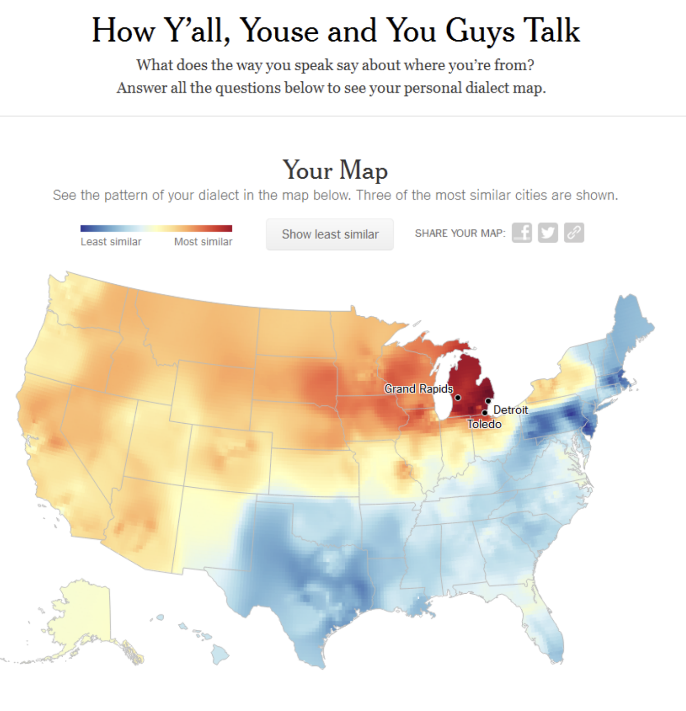

Review advanced data munging and visualization skills
Apply new knowledge of probability foundations
Build a Naive Bayes Classifier from scratch
Introduction
What does the way you speak say about where you’re from?
American regional dialects illustrate the diverse cultural, historical, and social influences that have shaped various communities across the country. Each dialect has its own way of pronouncing words, and sometimes even unique words and phrases, which can tell us a lot about the local culture and history. Each dialect, with its unique pronunciation, vocabulary, and syntax, is not just a means of communication but a window into the local identity and heritage of its speakers. These dialects reveal how migration, settlement patterns, and historical events have influenced language evolution, offering insights into the way people think, interact, and view the world around them. The study and preservation of these dialects are essential for understanding the dynamic nature of American English and for appreciating the profound diversity that characterizes the United States. By exploring these regional variations, we gain a deeper understanding of the complexities of American culture and the nuanced ways in which language reflects and shapes our experiences.

About 10 years ago, the New York Times published the “NYT Dialect Quiz.” The quiz asks a series of questions about your use of American English, and from that predicts the location you live and/or grew up. Most of the questions used in the quiz are based on those in the Harvard Dialect Survey, a linguistics project begun in 2002 by Bert Vaux and Scott Golder.
In this lab, we will build our own predictive model using a subset of the original data from the Harvard Dialect Survey. Our model will output the probability a respondent is from a given state based on the answers to 20 questions about their manner of speaking.
The Data
There are two sets of data for this lab, both located in the data/ folder. The data we will use to build our model been scraped from the Harvard Dialect Survey website and reformatted into the csv file hds.csv. Then we have our data for prediction—these are survey responses for our 20-question quiz. You should have already completed the survey yourself, so you can also see how the model does for you personally!
Due to the nature of the data, we won’t quite follow the workflow we discussed last module. Instead, we will treat all of the hds data as our “training” data, and we will treat our new survey data as an illustrative validation/test set, but we would really want more data to do a proper test.
First, we’ll load in the Harvard Dialect Survey data.
# A tibble: 6 × 6
state item_num item ans_ind ans_text ans_prop
<chr> <dbl> <chr> <chr> <chr> <dbl>
1 alabama 4 "caramel" a "with 2… 0.208
2 alabama 4 "caramel" b "with 3… 0.656
3 alabama 4 "caramel" c "I use … 0.116
4 alabama 4 "caramel" e "other" 0.0207
5 alabama 5 "the vowel in the second syllable … a "[i:] a… 0.261
6 alabama 5 "the vowel in the second syllable … b "[] as … 0.647
Then, we’ll load in our data.
# read the other dataset insurvey <-read_csv("data/dialect-survey-full.csv")
Rows: 10200 Columns: 7
── Column specification ────────────────────────────────────────────────────────
Delimiter: ","
chr (6): name, state, item, ans_ind, ans_text, states_lived
dbl (1): item_num
ℹ Use `spec()` to retrieve the full column specification for this data.
ℹ Specify the column types or set `show_col_types = FALSE` to quiet this message.
Exercise 1
Before we start modeling, let’s do some exploratory data analysis on the HDS data.
Exercise 1
Make a map for one item color coding each state by the most common answer.
Exercise 2
Hopefully this is kind of fun, but let’s also do some even more basic EDA. If we look, there are 4530 rows in the dataset, which with 50 states would give 90.6 rows per state. Does that make sense?
Exercise 2
Compare the rows representing two different states to diagnose what is going on. Use some kind of join or other comparison to highlight the issue and briefly explain. When you have finished, you can confirm you’ve got it by expanding the explanation below.
Explanation
You should have seen that some answer responses are missing for some states. Presumably, these are answers that were not given by anyone from that state. We need to address this, as we can’t be missing rows when we go to make our model.
To fix this, we can use a series of joins, including a new type of join you haven’t seen before: a cross join. The function cross_join(x, y) joins all of the rows in x with all of the rows with y, resulting in nrow(x) * nrow(y) rows. We want to first make a skeleton of the data we want, which is all of the distinct items and answers joined with all of the 50 states. Then, we can join the original data back onto this skeleton and fill in any resulting NA values with zeros.
Exercise 3
Exercise 3
Fix the problem as described in the explanation above. You can overwrite the hds dataset when you’ve got the solution.
Exercise 4
Our efforts have fixed the structure of the dataset, but they have left many rows with zero values (assuming you replaced the NAs). In the original data survey data, no one gave these answers, so the proportion should be zero. But, can we use these values directly in our model? The maximum-likelihood estimate for the conditional probability would be zero, but could this cause problems?
Ahem, basically, yes. If we include zero conditional probabilities in our model, it might so happen that we later make a new observation where \(P(d)=0\). If so, we’ll end up dividing by zero, and the model won’t be able to make a prediction.
One way to fix this is with smoothing. Instead of using the maximum likelihood parameter estimates, we use smoothed estimates. Methods differ (a common one is “Laplace Smoothing”), but the idea behind all of them is to replace observed zero proportions with some small positive probability value and then renormalize the probabilities.
Normalization
A key feature of probabilities is that the total probabilities of events in a sample space sum to one. If they don’t sum to one, then they ain’t probabilities! “Normalization” of a set of values (e.g. likelihoods) is a common step in probability calculations needed to ensure that the resulting values remain (or become) probabilities.
We can normalize any set of values to sum to one by dividing each by the sum of the whole set. Taking \(x'_i\) to be the normalized value of \(x_i\):
\[x'_i = \frac{x_i}{\sum_i x_i}\]
Exercise 4
There is no 100% principled way to do this. If we had more training and validation data, we might treat the degree of smoothing as a hyperparameter we could tune (more on that in later modules). For now, find the minimum observed ans_prop and replace the NA values with a value 1/10 as large. Then, renormalize the probabilities of the answers to ensure they sum to one for each question and state pair.
You can again overwrite the hds dataset when you’ve got the solution.
Exercise 5
Let’s grab out one respondent from our validation survey data to experiment on as we build our model code. We can put me, the author, in the hot seat, so let’s grab the row for Derek Powell.
Exercise 5
Implement the basic model as shown in lecture to generate predicted probabilities for all 50 states for this one respondent’s data. Print the first few lines of the tibble of predictions.
## code borrowed from lecture heres <- survey %>%filter(name =="anon166") %>%select(-state)# replace with me laterres <-left_join(s, hds, by =c("item_num", "ans_ind")) %>%group_by(state) %>%summarize(likeli =prod(ans_prop) ) %>%mutate(prior =1/n(),pdata =sum(likeli*prior),posterior = likeli*prior/pdata )res
Make a map of predictions for your own data and see if it makes sense. Did our model predict where you grew up? Where you have lived?
Exercise 7
We have created a “model” through a process of joining against a dataframe of conditional probabilities. Let’s close by transforming this code into something more closely resembling the model functions we have seen before and generally use in Machine Learning.
Exercise 7
Let’s do three things:
Test generating predicted probabilities for multiple respondents’ data, revising the code if necessary.
Rewrite this code to output only the top predicted state and probability.
Wrap this process up into a function that we can call on to output this for arbitrary data.
Your function should take the following form nb_predict(input_data) and should output a tibble with one row per participant. You can assume that the input data will take the same format (incl. variable names) as the survey data. The column name should indicate the participant’s name, .pred should indicate the predicted state, and .prob should indicate the probability associated with that state.
Exercise 8
Exercise 8
Compare your predictions to the actual observed values in our survey data. Compute an accuracy metric and compare to chance accuracy (briefly describe).
Exercise 9
Are you impressed by the accuracy score for our model? If not, consider whether guessing the exact state someone is from is really a fair test. If we think about American dialects, many are more regional rather than state-specific, and people have different personal backgrounds that could influence their dialect. For instance, a Wisconsin dialect (and accent) is in many ways similar to a Minnesotan dialect. So if the model guesses “Minnesota” for someone from Wisconsin, is it entirely wrong?
In multi-class classification tasks it is common to measure accuracy in terms of “top-\(n\)” accuracy. That is, whether the correct class was in the top \(n\) most probable classes identified by the model (e.g. top 5, top 10, etc.). This can sometimes offer a more realistic or “fair” assessment.
Exercise 9
Write a new function nb_predict_topN(input_data, N) that takes an additional argument N and outputs the top N classes and their probabilities. The tibble output by the function should include a .rank variable indicating the rank of the guess in terms of posterior probability.
Use your new function to compute the top-5 accuracy of the model.
BONUS exercise
So far, we have assumed a uniform prior over classes (states), calculated as 1/n(). But we might be able to do better with an informative prior.
One approach would be to estimate a prior empirically from our training dataset—we could use the proportion of respondents from each state as the prior probability a new datapoint would come from that state. Alternatively, in this context, we might suspect that our new survey is not as representative as the training data, and instead might be location-biased, if it was administered primarily to people at ASU. So, we might form a prior based on distance from Arizona. Or, we might combine these ideas.
Let’s keep things relatively simple while experimenting with this a bit by forming a prior based on the population of U.S. states.
Exercise 10 (bonus)
Google your way to a reputable-looking dataset for the population of U.S. states and from that compute the probability of living in each state. Modify your code for nb_predict_topN as needed to include that probability as the prior when making predictions. Then, rerun the calculations from exercises 10 and 11 and compare what you find with the uniform vs informative prior.
Exercise 11
We can actually make our code a bit simpler. Think back to Bayes’ Rule and recall that we called the the \(P(d)\) term the “normalization” term and that we sometimes went so far as to leave it out and express Bayes Rule as the proportionality:
\[P(h|d) \propto P(d|h)P(h)\] It turns out we can often ignore this term when thinking about probabilities, as we can skip computing it directly and simply normalize the values computed from the expression above.
This is only true exactly as I’m showing it here in the case of discrete probability distributions. Things are a bit different in the case of continuous probability distributions as there is no longer a finite number of realizations of \(h\).
As is often the case, the right notation makes this clear:
As this makes clearer, the probability of the data \(P(d)\) is just the probability of the data given each hypothesis, summed over all the possible hypotheses. But this is exactly what we are doing when we calculate likeli*prior for each state, so we can just divide by the sum. I.e. we can normalize these values into probabilities.
Exercise 11 (bonus)
Modify your model code to skip explicitly calculating the probability of the data (pdata in the lecture code) and instead simply normalize the likeli*prior values.
Exercise 12
Calculating with log-probabilities
Often, calculations of probabilities are computed in terms of log-probabilities (i.e. in log-space, or after log-transformation)
In log-space, multiplication becomes addition
\[log(a \times b) = log(a) + log(b) \] - Then, log-probabilites are transformed back into probabilities through exponentiation
The function log() takes the log of a value (transforms probabilities into log-probabilities) and the function exp() exponentiates the log back into the original value (transforms log probabilities into probabilities). i.e. exp(log(x)) == x.
Exercise 12 (bonus)
Further modify your code to perform the computations in log-space. Confirm that the results are the same.
Wrapping up
When you are finished, knit your Quarto document to a PDF file.
Important
MAKE SURE YOU LOOK OVER THIS FILE CAREFULLY BEFORE SUBMITTING
When you are sure it looks good, submit it on Canvas in the appropriate assignment page.